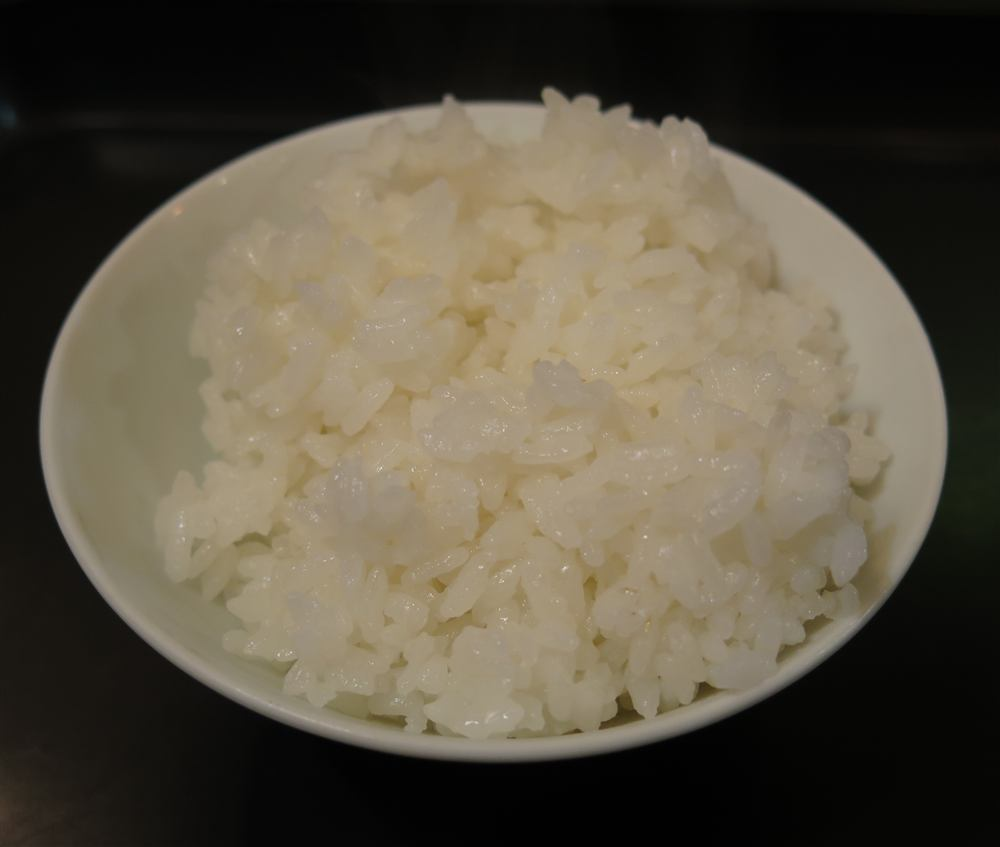

MENU
お品書き
浜作のお品書きをご紹介します。仕込み状況により内容が変わる場合がございますので、詳しくはお電話またはInstagramにてご確認ください。
メニュー内容・お価格・営業時間の詳細は、店頭・お電話・Instagramにてお気軽にご確認ください。
一部の写真はフリー素材のイメージです。実際の店内・お料理写真は、貴店にご提供いただいたものに差し替えます。

浜作のお品書きをご紹介します。仕込み状況により内容が変わる場合がございますので、詳しくはお電話またはInstagramにてご確認ください。
一部の写真はフリー素材のイメージです。実際の店内・お料理写真は、貴店にご提供いただいたものに差し替えます。